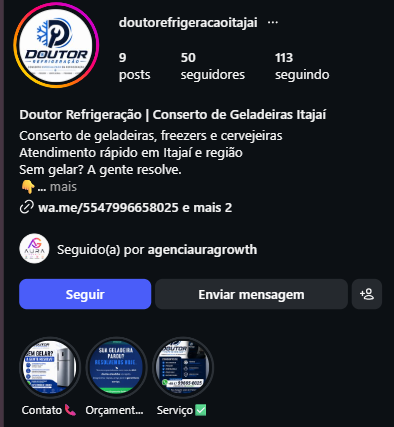

Somos a agência que faz empresas e prestadores de serviço do Norte de Santa Catarina serem encontrados no Google, atraírem clientes nas redes e transformarem cliques em vendas, com site, tráfego pago e estratégia de verdade. Atendemos a região e também o Brasil e o exterior remotamente.
Sem compromisso · A gente explica cada passo · Resposta no mesmo dia
Para quem trabalhamos
Atendemos quem entende que presença digital não é gasto, é o canal por onde o próximo cliente chega.
Refrigeração, vidraçaria, estética, clínicas, oficinas, acabamentos e outros serviços que precisam ser achados por quem está na mesma cidade e região.
Negócios que já faturam mas dependem de indicação, não aparecem nas buscas e têm redes sem estratégia. Querem escalar de forma profissional.
Quem abriu ou vai abrir e entende que presença digital é essencial desde o dia um. Autoridade construída sem improviso.
Sistemas, integrações, automações de atendimento e agentes de IA. Tecnologia aplicada de forma prática, não só teórica.
Transformamos cliques em clientes. Conectamos tecnologia, dados e estratégia para fazer seu negócio crescer onde seu cliente está.
Quero crescer com a AURA →O que fazemos
Do site ao anúncio, tudo pensado para gerar cliente. Conheça as áreas e aprofunde na página de cada serviço.
Sites rápidos, otimizados para o Google e construídos para converter visitante em cliente.
Instagram e conteúdo com estratégia para atrair, engajar e converter seguidores em clientes.
Campanhas com público certeiro e otimização contínua para gerar leads qualificados.
Apareça no topo do Google e do Maps quando pesquisarem seu serviço na sua cidade.
Integrações e automação de atendimento que economizam o tempo da sua equipe.
Atendimento e qualificação de leads 24/7 no WhatsApp e no site, sem depender de equipe.
Como trabalhamos
Marketing não pode ser caixa-preta. Você entende o porquê de cada decisão, e acompanha o resultado.
Começamos ouvindo o seu negócio. Analisamos como você aparece hoje no Google, nas redes e nas buscas da sua região, e explicamos, sem jargão, o que está travando os resultados.
Montamos um plano específico para o seu mercado e cidade. Apresentamos cada etapa, o que ela faz e o resultado esperado, você decide com clareza, nunca no escuro.
Você aprova antes de publicar. Executamos sites, campanhas e conteúdo com acompanhamento próximo, ajustando pelos números reais.
Um relatório simples mostra o que gerou resultado e o plano do próximo mês. Se surgir dúvida, a gente explica, quantas vezes precisar.
Oferta exclusiva
Responda algumas perguntas rápidas e a gente monta um diagnóstico com as melhores soluções para o seu negócio: quanto investir, seus objetivos, os resultados que você espera e a região que você quer alcançar.
Sem compromisso. Você sai com informação útil, contratando ou não.
Nosso portfólio
Sites e redes para empresas e prestadores de serviço que querem ser encontrados e vender mais. Clientes reais, links reais.
Diferencial AURA: nossos sites não são só bonitos. São feitos para serem indexados no Google e encontrados em buscas orgânicas da sua região. Quando alguém pesquisa seu serviço na sua cidade, o seu negócio aparece.
Site institucional para clínica odontológica em Joinville. Feito para ser encontrado por quem busca dentista na cidade.
Landing page de alta conversão para controle de pragas, com formulário de orçamento e Google Ads gerando leads.
Site para vidraçaria em Balneário Camboriú, com foco em orçamento rápido e presença nas buscas da região.
Landing page para som e acessórios automotivos. Marca construída do zero, com presença e captação de clientes.
Landing page para imobiliária, pensada para captar interessados em comprar e alugar imóveis.
Landing page para empresa de instalações, com apresentação dos serviços e canal direto de contato.
Site para serviço de contabilidade, transmitindo confiança e facilitando o contato de novos clientes.

Site com páginas por serviço e gestão de Instagram para conserto de geladeiras em Itajaí. Autoridade técnica em linguagem acessível.
Quer um site ou gestão de redes assim para o seu negócio?
Quero um projeto assim →Conteúdo
Dicas práticas de marketing, sites e tráfego para o seu negócio local. Conteúdo novo com frequência.
Onde atendemos
A AURA Growth fica em Guaramirim, Santa Catarina e atende de perto toda a região Norte do estado: Jaraguá do Sul, Joinville, Schroeder, Massaranduba, Corupá, São Bento do Sul, Barra Velha, Araquari, além de Balneário Camboriú, Itajaí e Blumenau. Para empresas de qualquer cidade do Brasil ou do exterior, todo o trabalho é feito remotamente, com a mesma proximidade, por WhatsApp, e-mail e videochamada.
Quem está do outro lado
A AURA Growth nasceu em Guaramirim para unir visão de marketing e domínio técnico em tecnologia. Duas fundadoras, mais de 5 anos cada ajudando empresas e prestadores de serviço a venderem mais pela internet.

Co-fundadora · Estrategista de Sites & Eng. de Software
Engenheira de software com mais de 5 anos ajudando empresas a venderem online. Cuida de sites, landing pages, SEO técnico, tráfego pago e automação.

Co-fundadora · Estrategista de Mídias & Marketing
Graduada em Marketing, com mais de 5 anos ajudando prestadores de serviço a conquistarem clientes nas redes e na busca local. Define posicionamento, conteúdo e Google Meu Negócio.
Prova social real
Negócios reais que a gente atende, sem depoimento inventado. Passe o mouse para pausar.
Sua avaliação ajuda mais empresas da região a nos encontrar. Deixe seu depoimento, é rápido.
Envia direto pro nosso WhatsApp para publicarmos oficialmente.
Tire suas dúvidas
Respostas diretas para quem pensa em investir no digital.
A AURA Growth é uma agência sediada em Guaramirim (SC) especializada em fazer empresas e prestadores de serviço venderem mais online. Atende Jaraguá do Sul, Joinville, Schroeder, Massaranduba, Corupá e todo o Norte de Santa Catarina, além do Brasil e do exterior de forma remota, com criação de sites, tráfego pago, SEO local e gestão de mídias.
Sim. Além da região Norte de SC, atendemos empresas em todo o Brasil e no exterior de forma 100% remota, por WhatsApp, e-mail e videochamada, com a mesma proximidade de um atendimento local.
Trabalhamos com planos mensais adaptados à realidade de cada negócio e com projetos pontuais, como criação de site. Peça um diagnóstico gratuito pelo WhatsApp: entendemos o que você precisa e apresentamos uma proposta sob medida, sem compromisso.
Sempre. A gente gosta de conversar e explicar cada processo, do porquê de uma campanha até o que cada número do relatório significa. Você nunca fica no escuro sobre o que está sendo feito no seu negócio.
Tráfego pago pode trazer leads já nas primeiras semanas. SEO local, Google Meu Negócio e redes orgânicas costumam consolidar crescimento em 2 a 4 meses. Somos transparentes sobre prazos desde o primeiro contato.
Sim. Contratos mensais com aviso prévio de 30 dias. Não prendemos cliente com multa, ficamos porque entregamos resultado.
Pronto para começar?
Ele vai te encontrar ou vai encontrar o concorrente? Comece com um diagnóstico gratuito e veja o que está faltando.
Quero meu diagnóstico gratuitoAdriane (sites/tráfego) (47) 98839-3646 · Andreza (mídias/marketing) (47) 99151-8157